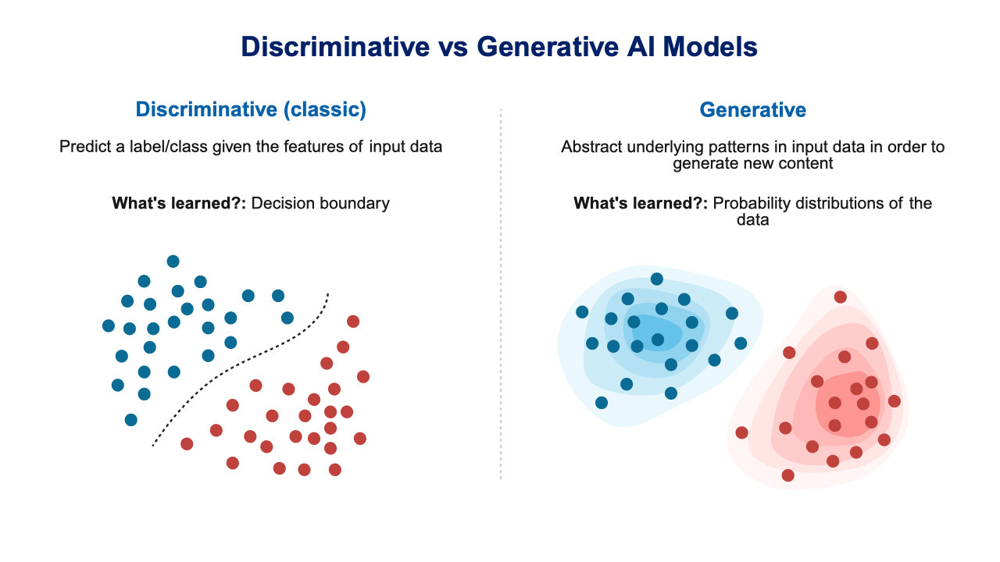

1 Introduction to Computational Tools
After completing this chapter, you will be able to:
- Articulate why computational skills are essential for modern bioscience research
- Distinguish between coding and scripting languages
- Identify the computational tools covered in this course
- Set up your computing environment for the course
1.1 The Computational Revolution in Biology
Modern biological research has undergone a profound transformation. The advent of high-throughput technologies—from next-generation sequencing to automated microscopy to mass spectrometry—has generated an explosion of data that far exceeds what can be analyzed manually. Consider these examples:
- A single human genome sequence contains approximately 6 billion base pairs
- A typical RNA-seq experiment generates tens of millions of short reads
- Proteomics studies can identify and quantify thousands of proteins simultaneously
- High-content imaging screens produce terabytes of image data
To make sense of this data deluge, researchers must be fluent in computational tools. This fluency goes beyond simply running pre-made software—it requires understanding how to manipulate data, automate analyses, and ensure reproducibility.
1.2 Why Learn Computational Skills?
There are compelling reasons to invest time in developing computational proficiency:
Speed and Scale. Computational tools allow you to perform thousands of operations with single commands. Tasks that would take days by hand can be completed in seconds.
Reproducibility. Scripts and code serve as a complete record of your analysis. Unlike clicking through graphical interfaces, command-line workflows can be exactly reproduced, shared, and verified (Sandve et al., 2013; Wilson et al., 2017).
Flexibility. General-purpose programming languages can handle virtually any data format or analysis type. You’re not limited to what software developers anticipated.
Access to Specialized Tools. Many cutting-edge analysis tools in bioinformatics are only available through the command line. Learning to use the shell opens doors to thousands of free programs developed by scientists for scientists.
High-Performance Computing. Large-scale analyses require computing clusters. These systems are accessed and controlled through command-line interfaces.
Computational skills are increasingly valued in academic and industry positions. Investing in these skills now will pay dividends throughout your career. Organizing your computational projects well from the start saves countless hours later (Noble, 2009).
1.3 Coding vs. Scripting: What’s the Difference?
You’ll often hear the terms “coding” and “scripting” used interchangeably, but there are technical distinctions worth understanding.
Compiled Languages (Coding)
Compiled languages require a separate compilation step that translates human-readable source code into machine code before execution. Examples include:
- C/C++
- Fortran
- Rust
- Go
The compilation process produces optimized executable files that run very quickly. However, compiled languages typically require more setup and are less forgiving of errors during development.
Interpreted Languages (Scripting)
Interpreted languages (or scripting languages) execute code line-by-line at runtime, without a separate compilation step. Examples include:
- Bash/Shell
- Python
- R
- Julia
- Perl
Interpreted languages offer greater flexibility and faster development cycles at the cost of some execution speed. They’re ideal for data analysis, automation, and interactive exploration.
The distinction between compiled and interpreted languages has become increasingly blurred. Modern systems like Julia use just-in-time (JIT) compilation to achieve near-compiled performance with scripting-language convenience. Python and R can also interface with compiled C/C++ code for performance-critical operations.
Which Should You Learn?
For most biological research, interpreted languages are the right choice. They enable rapid prototyping and experimentation—you can try an idea, see if it works, and refine it immediately. Their interactive nature makes them ideal for data exploration, allowing you to probe your data and understand its structure before committing to a particular analysis approach. The scientific computing community has developed extensive libraries for these languages, from statistical methods to machine learning to bioinformatics pipelines. And because interpreted languages tend to have more forgiving syntax and immediate feedback, they present lower barriers to entry for beginners.
In this course, we work primarily with Bash (the Unix shell) and R, with Python installed and used alongside them, and with exposure to high-performance computing concepts that may eventually lead you to compiled languages if your research requires it.
1.4 Tools We Will Cover
This book and accompanying course introduce you to a carefully selected set of tools that form the foundation of computational research in the life sciences (Buffalo, 2015).
Unix/Linux and the Shell
The Unix shell (specifically Bash) provides a powerful interface for file manipulation that goes far beyond what graphical file managers offer. It includes specialized tools for processing large text-based data files—essential when working with genomic sequences, tabular data, or log files. Perhaps most importantly, the shell lets you combine simple programs into complex workflows through pipes and scripting, and it provides access to remote computing systems using the same commands you use locally. Understanding Unix is essential because it underlies most scientific computing infrastructure, from laptops to supercomputers. The shell is introduced in Chapter 4 and developed through Chapter 10.
R Statistical Programming
R is a programming language and environment specifically designed for statistical computing and graphics (R Core Team, 2024). It provides comprehensive statistical analysis capabilities, from basic descriptive statistics to advanced machine learning algorithms. R excels at producing publication-quality graphics with fine-grained control over every visual element. The community has developed thousands of packages for specialized analyses in virtually every domain of science, and R integrates seamlessly with reproducible document systems like Quarto and R Markdown. The Positron IDE provides an excellent development environment that makes working with R accessible and productive. R is introduced in Chapter 11, with data wrangling and graphics in Chapter 13 and Chapter 14.
Python
Python is a general-purpose programming language that has become the lingua franca of image analysis, machine learning, and instrument control, and it is the language you are most likely to meet in code written by engineers outside the statistics community. R remains the primary language of this course, but Python gets a chapter of its own: you will install it in Chapter 2, and Chapter 12 covers the language, NumPy, pandas, and plotting at the same depth as Chapter 11, ending with a translation table between the two. You will also run Python code chunks in Quarto documents (Chapter 5) and use Python environments (venv, uv, and conda) both on your laptop and on Talapas. The concepts you learn in Bash and R (variables, loops, functions, files) transfer directly, and many students find that once R is comfortable, Python follows quickly.
Editors and IDEs (VS Code, Positron, RStudio)
All of the code in this course lives in plain-text files, and you will spend most of your working hours in the program that edits them. An integrated development environment (IDE) bundles a text editor with a terminal, a console for interactive R or Python, a file explorer, and a front-end to version control. We use three: VS Code, a general-purpose editor with the largest extension ecosystem; Positron, Posit’s data-science IDE built on the same open-source core as VS Code with R and Python built in; and RStudio, the classic R environment. Chapter 2 walks through installing and using each one and offers guidance on which to choose for which task.
Quarto and Reproducible Documents
Quarto is an open-source scientific publishing system (Posit Software, PBC, 2024) that enables you to combine narrative text with executable code in a single document. From this unified source, you can generate reports, presentations, websites, and books—all while ensuring your analyses are fully reproducible. Because the code runs when the document renders, results always match the code that produced them. You can then share your work in multiple formats (HTML, PDF, Word) without maintaining separate versions. This book itself was written using Quarto! See Chapter 5.
Git and GitHub
Git is a version control system that tracks changes to your files over time (Blischak et al., 2016; Chacon & Straub, 2014). GitHub is a web-based platform for hosting Git repositories. Together, they provide a complete history of your project’s development, allowing you to understand how your work evolved and revert to earlier versions if needed. Git enables safe experimentation with new ideas through branching—you can try risky changes without affecting your working code. The platform facilitates collaboration with colleagues worldwide, letting multiple people work on the same project simultaneously. And GitHub makes it easy to share code and data publicly, contributing to open science and reproducible research. Git and GitHub are covered in Chapter 20, with a command reference in Appendix I.
High-Performance Computing
Talapas is the University of Oregon’s computing cluster. You’ll learn to access and navigate this remote computing environment, submit and manage batch jobs that run when resources become available, use software modules to access specialized tools, and scale your analyses far beyond what your laptop can handle. When your analysis takes hours or days, or requires more memory than your personal computer has, Talapas provides the computational power you need (Chapter 16).
1.5 The Course Dataset
Most examples in the lectures use one small, real dataset so that each new tool is applied to data you already know. Stickle_RNAseq.tsv holds RNA-seq read counts for 600 genes measured in the guts of 80 threespine stickleback (Gasterosteus aculeatus) from the Cresko Lab. The fish come from two host genotypes (A and B) and were raised with either a conventional microbiota or a single bacterial species (“mono”), giving four groups of 20. The file is plain text, tab-separated, with one row per fish and columns Individual, Genotype, Microbiota, Geno&Micro, and Gene1 through Gene600.
You will count its rows at the shell (Chapter 7), pull out groups with grep, cut, and awk (Chapter 9), read it into R and Python (Chapter 11, Chapter 12), reshape and plot it (Chapter 13, Chapter 14), run the analysis as a batch job on Talapas (Chapter 16), and write it up as a Quarto report (Chapter 5). Download it once into your course project folder:
1.6 Setting Up Your Computing Environment
Before diving into the technical content, you’ll need to set up your computing environment. This section covers the operating-system level: getting a Unix shell on macOS, Linux, or Windows. The rest of the toolkit (R, Python, Quarto and TinyTeX, VS Code, and Positron) is installed in Chapter 2, which also has a verification checkpoint and a troubleshooting table; Git is installed in Chapter 20.
macOS Users
macOS is built on a Unix operating system, so a shell is already there. Open Terminal (in Applications → Utilities, or press Cmd-Space and type “Terminal”); if you prefer a more feature-rich terminal, iTerm2 is a popular alternative. One extra step is needed: install Apple’s command-line developer tools, which provide the compilers and Git that many other tools depend on. In Terminal, type
and click Install in the dialog that appears. It can take five to ten minutes; if the command reports that the tools are already installed, you are done. (Installing the full Xcode from the App Store also works, but it is many gigabytes and unnecessary for this course.) You can confirm the tools are in place with xcode-select -p, which prints their location, or simply git --version.
macOS has no built-in package manager for command-line software. Homebrew (https://brew.sh) fills that gap: once installed, brew install <name> fetches and installs tools such as wget, tree, or a newer git with one command, and brew update && brew upgrade keeps them current. Install it by pasting the single command shown on the Homebrew home page into Terminal (it needs the Xcode command-line tools, which you just installed). It is not required for this course, but later chapters mention it as one way to install Git (Chapter 20), and you will find that most macOS instructions on the web assume you have it.
Linux Users
Linux systems include multiple terminal applications. Open your distribution’s default terminal emulator, often called “Terminal” or “Console” (frequently Ctrl-Alt-T). Everything else in this chapter’s setup is already present; the only additions you will need are the compiler toolchain and R itself, both of which come from your package manager (sudo apt install build-essential gfortran r-base r-base-dev on Ubuntu/Debian) as described in Chapter 2.
Windows Users
Windows requires additional setup to access a Unix-like environment. The recommended approach uses Windows Subsystem for Linux (WSL), which runs a real Ubuntu Linux inside Windows. It requires Windows 11 or an up-to-date Windows 10.
Follow these steps to install Ubuntu on Windows:
- Right-click Windows PowerShell (or Terminal) in the Start menu and choose Run as administrator
- Type
wsl --installand press Enter. This installs WSL and Ubuntu; there is no separate Ubuntu download. (If Ubuntu does not appear after the restart, runwsl --install -d Ubuntu, or install Ubuntu from the Microsoft Store) - When it finishes, restart your computer
- Open Ubuntu from the Start menu and wait while it finishes installing
- Create a Linux username and password. They do not need to match your Windows login, but remember them. When you type the password, nothing appears on screen; that is normal, so type it and press Enter
- Update Ubuntu’s software (you will be asked for your Linux password):
The Ubuntu window is a real Linux system, not PowerShell: it has its own home directory (/home/yourname, also written ~), its own files, and the Unix commands used throughout this book. Keep your course folders and files there. Your Windows files are visible from Ubuntu at /mnt/c/Users/<name> (for example /mnt/c/Users/<name>/Documents). Having two operating systems on one laptop is confusing at first; Chapter 2 has a “which side am I on?” table (Table 2.5) explaining where to type shell commands (Ubuntu) and where to install R, Python, and the IDEs (Windows). A detailed guide is available at ubuntu.com/tutorials/install-ubuntu-on-wsl2-on-windows-10, and Microsoft’s own instructions are at learn.microsoft.com/windows/wsl/install.
wsl --install needs hardware virtualization turned on and a reasonably current Windows. If it fails, run Windows Update, enable virtualization (often called VT-x, AMD-V, or SVM) in your computer’s BIOS/UEFI settings, and try again with wsl --update followed by wsl --install -d Ubuntu. On a laptop managed by a lab or department where this is not possible, Git Bash (installed with Git for Windows from https://git-scm.com/download/win) provides the basic Unix commands used in Chapter 4 and is enough to follow along, though not everything later in the book (package managers, Talapas-style scripts) will work there. Talk to the instructor early if you end up on this path.
Talapas Access
To use the university’s computing cluster, you must be a member of a PIRG (Principal Investigator Research Group), which your PI requests and manages; your login credentials are your Duck ID and password, with Duo two-step login. The UO VPN is recommended but not required: without it, you connect to login.talapas.uoregon.edu, a load balancer that spreads users across the login nodes; with it, you may also connect to a specific login node (login1 through login4) directly. Chapter 3 explains accounts, PIRGs, and the browser-based Open OnDemand interface, and Chapter 16 covers SSH and job submission in detail.
1.7 Course Structure and Expectations
This book is designed to accompany a hands-on course where most of class time is devoted to coding practice rather than lectures. Expect to:
- Follow along with examples during class sessions
- Complete practice exercises to reinforce concepts
- Submit homework assignments demonstrating your skills
- Develop a final project applying what you’ve learned to your own research
Computational skills develop through repeated practice. Don’t be discouraged if concepts don’t click immediately—everyone struggles at first. The key is persistence and willingness to experiment.
1.8 Getting Help
When you encounter problems (and you will!), several resources are available:
Manual Pages. Unix commands have built-in documentation accessible via man command_name. Type q to exit (see Section 4.3.1).
Help Functions. In R, use ?function_name or help(function_name) to access documentation.
The Internet. Sites like Stack Overflow contain solutions to virtually every common error message. Learning to search effectively is a crucial skill.
Generative AI. Tools like ChatGPT and Claude can explain concepts, debug code, and suggest solutions. However, always verify AI-generated code and understand what it does before using it. Chapter 19 discusses AI assistants, including those built into your editor, in depth.
UO Resources. The University provides a great deal of help of its own, from the Technology Service Desk to free R and Python consultations at UO Libraries and the RACS team behind Talapas; Chapter 3 lists them and explains how to ask a question that gets a fast answer.

Each Other. Your classmates are experiencing the same learning curve. Collaboration and discussion accelerate everyone’s learning.
1.9 Summary
This chapter introduced the rationale for learning computational tools and provided an overview of the skills you’ll develop. Key takeaways:
- Computational literacy is essential for modern biological research
- Scripting languages (Bash, R, Python) are ideal for data analysis; this book teaches R in depth and Python alongside it
- Version control and reproducibility are professional best practices
- Learning requires patience, practice, and willingness to make mistakes
In Chapter 6, we’ll explore computer systems architecture to build your mental model of how computers work—knowledge that will inform everything that follows.
Exercises
Environment Check: Verify that you can open a terminal on your computer. What appears when you type
echo "Hello World"and press Enter?Software Installation: Complete the operating-system setup for your platform above (Xcode command-line tools on macOS, or WSL with Ubuntu on Windows), then follow the install checklist in Chapter 2. Open Positron or RStudio and type
1 + 1in the R console. What happens?Reflection: Write a paragraph describing one computational challenge in your current or planned research. What skills from this course might help address it?